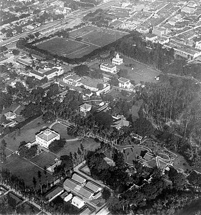
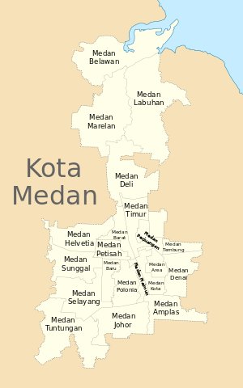

Sejarah

Medan berasal dari kata bahasa Tamil Maidhan atau Maidhanam, yang
berarti tanah lapang atau tempat yang luas, yang kemudian teradopsi ke
Bahasa Melayu. Dalam Kamus Indonesia-Karo (2002) yang ditulis Darwin
Prinst, kata 'medan' berarti 'menjadi sehat' atau 'lebih baik.
Geografis

Kota Medan memiliki luas 26.510 hektare (265,10 km²) atau 3,6% dari
keseluruhan wilayah Sumatera Utara. Dengan demikian, dibandingkan
dengan kota/kabupaten lainya, Medan memiliki luas wilayah yang relatif
kecil dengan jumlah penduduk yang relatif besar. Secara geografis kota
Medan terletak pada 3° 30' – 3° 43' Lintang Utara dan 98° 35'–98° 44'
Bujur Timur. Untuk itu topografi kota Medan cenderung miring ke utara
dan berada pada ketinggian 2,5–37,5 meter di atas permukaan laut.